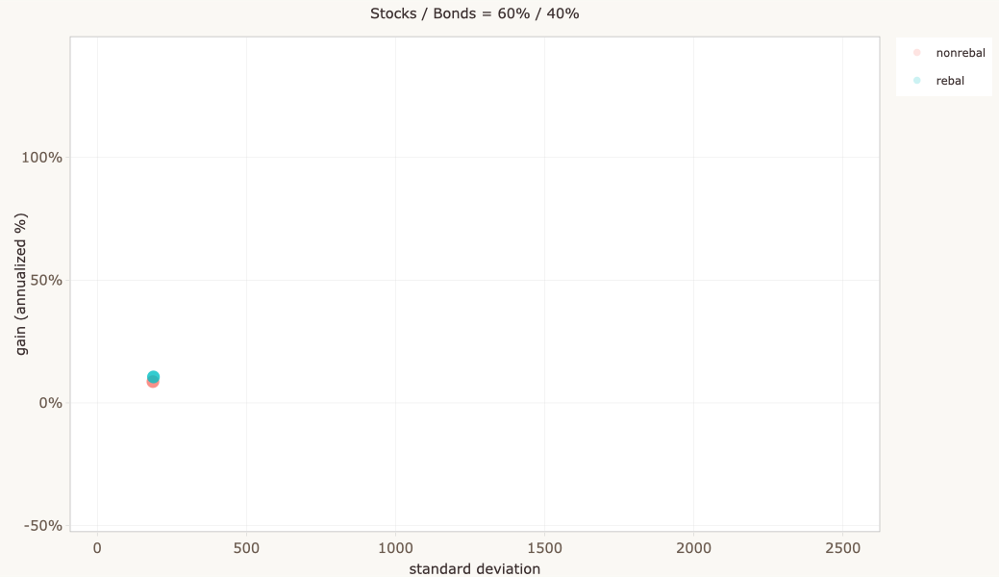
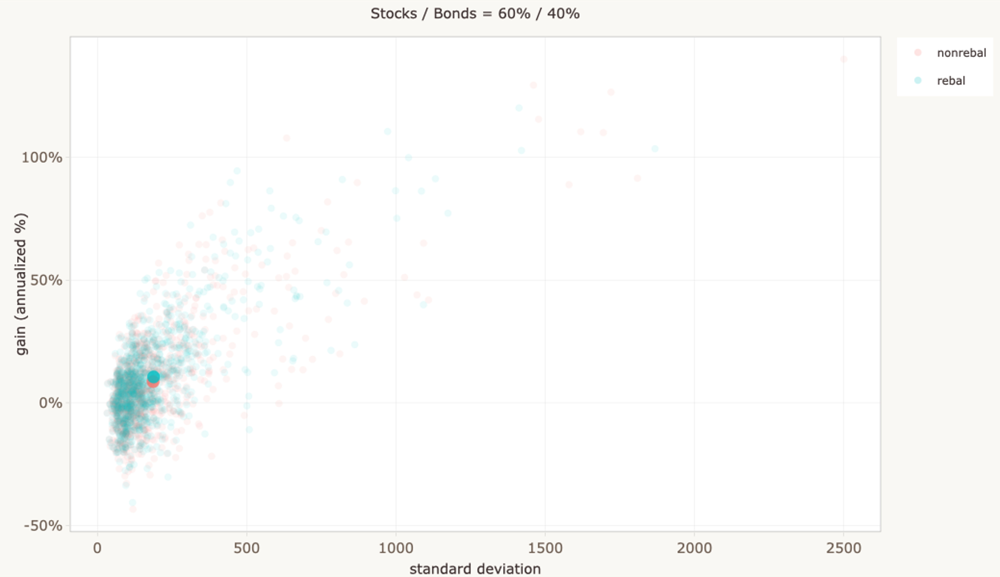
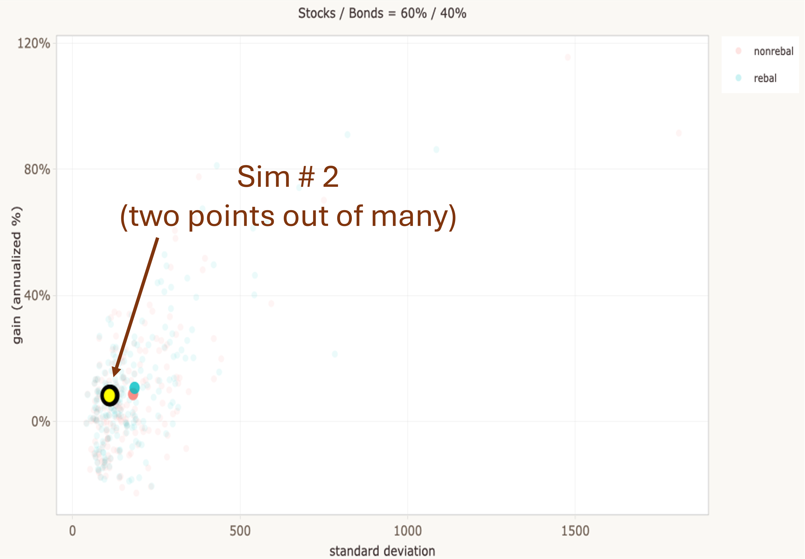
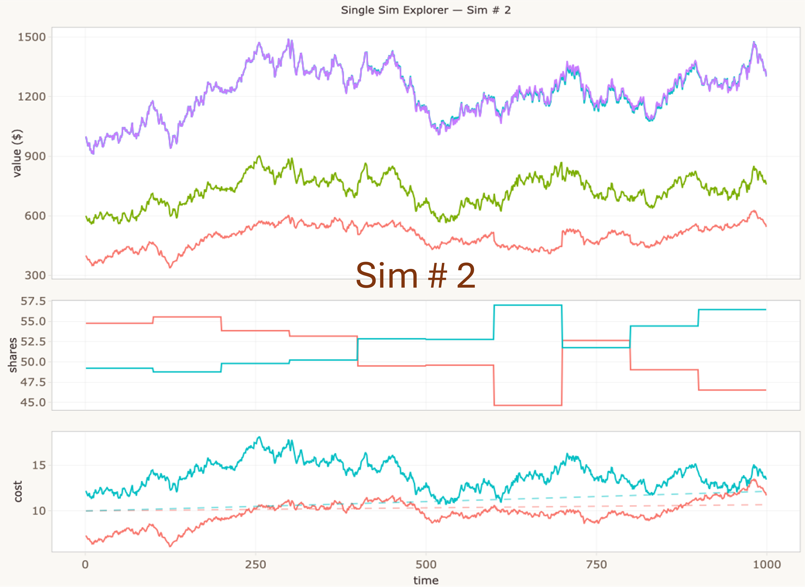

A Monte Carlo exploration of stock/bond portfolios — what rebalancing actually does, and why the efficient frontier is more complicated than it looks.
Distributions, not point estimates. Most financial projections give you a single number — an expected outcome. But any single run of a portfolio through time is just one draw from a wide distribution of possibilities. This simulator makes that distribution visible: hundreds of independent runs, each following the same parameters but arriving at very different places. The spread is the story.
What does rebalancing do to the efficient frontier? Standard treatments of the frontier (discussed below) assume rebalancing — it's baked into the math, so only one curve is ever shown. This simulator plots both the rebalanced and non-rebalanced frontiers side by side. As far as I can tell this comparison isn't common in the literature, though it's a large field and I don't claim to have read it all.
I've long been skeptical of financial projections that give you a single number — "at 7% annual return, your $10,000 grows to $76,000 in 30 years." That figure isn't wrong exactly, but it papers over an enormous amount of uncertainty. Real markets don't move at a steady 7%. They lurch, recover, crash, and surge, and the path matters as much as the average.
I wanted to see the distribution of outcomes, not just the expected value. Building a simulation from scratch forced me to be precise about my assumptions and gave me something I could actually poke at.


Each simulation generates a single set of correlated price paths, but produces two dots on the Gain vs SD plot — one for the rebalanced strategy and one for the non-rebalanced strategy, each with its own annualized gain and standard deviation. It's tempting to treat these as abstract data points, but each pair represents a complete simulated history: a thousand days of correlated price movements, portfolio rebalancing events, and compounding returns. The Single Sim Explorer tab lets you open up any simulation and see the machinery inside.


The top panel shows how much each asset is worth over time in the rebalanced portfolio, plus the total value for both strategies. The middle panel shows shares held — watch them shift at each rebalancing event as the portfolio sells winners and buys losers. The bottom panel shows the raw price paths generated by the MCMC engine. Every pair of dots on the Gain vs SD plot has a story like this behind it.
This simulator is a demonstration of general principles, not a predictive model of real markets. The simplifications are significant and worth being clear about.
The most important simplification: the statistical properties of simulated prices are fixed and don't change over time. In technical terms the process is stationary — or approximately ergodic. Real market data is famously neither. Volatility clusters. Correlations spike during crises. Entire regimes shift. None of that is captured here.
On the other hand, the simulator does model correlation between stock and bond returns — a genuinely important factor. Decorrelation is a key source of diversification benefit, and you can explore it directly via the stock–bond correlation parameter.
Imagine plotting every possible stock/bond mix on a chart — risk on the horizontal axis, expected return on the vertical. Most of those points are dominated — meaning there's some other mix that offers either higher return for the same risk, or lower risk for the same return. The efficient frontier is the curve formed by the mixes that aren't dominated: the best achievable return at every level of risk.
Standard treatments of this concept assume rebalancing throughout — it's an implicit part of the framework, so there's typically only ever one frontier shown. This simulator plots two: one for rebalanced portfolios and one for portfolios left to drift. The gap between them makes visible something that's easy to overlook — rebalancing doesn't just keep you on the frontier, it changes where the frontier is.
In the simulator, the Efficient Frontier tab shows the frontier as point estimates — each dot is the mean gain and mean SD across all simulations for one stock/bond split. The Frontier Explorer tab shows the full distributions from which those point estimates are derived: clouds of individual simulation outcomes at each allocation, with the frontier overlaid.
Use the interactive widget below to explore how the frontier's shape responds to changes in correlation, returns, and volatility:
The rebalanced frontier uses the standard two-asset portfolio variance formula: σp = √(w²σs² + (1−w)²σb² + 2w(1−w)ρσsσb). The non-rebalanced curve is an approximation — without rebalancing, the portfolio drifts toward the higher-returning asset, increasing effective volatility and reducing the diversification benefit.
Stock and bond prices follow a random walk generated by Metropolis-Hastings sampling. At each time step, a new price is proposed from a multivariate normal centered on the current price. The proposal is accepted or rejected based on the ratio of target densities, producing correlated price paths that respect the specified distribution parameters.
| Parameter | What it controls |
|---|---|
| Simulations (n) | Number of independent runs. Frontier sweep needs n ≥ 500 for a reasonably clean curve. |
| Time horizon (days) | Length of each run. ~1 trading day per step with default settings. |
| Stock allocation (%) | Target stock percentage. Bonds hold the remainder. Disabled in frontier sweep mode. |
| Rebalance interval | How often (in days) the portfolio resets to target allocation. |
| Volatility (SD) | Price distribution standard deviation per asset. Higher = more volatile. |
| Stock–bond correlation | How closely the two assets move together. Negative = more diversification benefit. |
| Interest rates | Compound growth rates per interest period, independent of price volatility. |
Written in R using Shiny, deployed on shinyapps.io and embedded via iframe. Plots rendered with ggplot2 + plotly. Source code on GitHub.